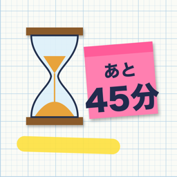

1日あと何分か分かる勉強記録
試験日から逆算して、今日あと何分。
資格や受験などの目標ごとに、試験日と、それまでに勉強したい時間を決めて、勉強した時間を記録します。残りの時間を試験日までの日数で割って、毎日「今日あと何分」かを出します。
- 今日あと何分。残りの時間÷試験日の前の日までの勉強する日の数で「今日やる分」を出し、今日やった分を引いて大きく見せます。遅れた日のぶんは、次の日から割り直します
- 予定より先か遅れか。始めた日から毎日同じだけ進む計画とくらべて、「1時間30分 先」「7時間 遅れ」と出します
- 積み上げの線と日ごとの棒。計画とやった時間の線、この14日の棒、記録の一覧
- タイマー（アプリを閉じても数えます）か、手で入れる。勉強しない曜日を決めると、その日を除いて割ります。目標はいくつでも
- 登録・課金はありません。記録はこの端末の中だけに保存します。画面のいちばん下に小さな広告が出ます（文字を打っている間は出しません。画面いっぱいの広告・動画の広告は出しません）